Веб-приложение для офтальмологов: анализ электроретинограммы и классификация патологий сетчатки по частотным признакам.
Приложение анализирует частотную характеристику сетчатки по электроретинограмме (ОЭРГ). Сетчатка рассматривается как динамический объект: на вход подаётся периодический световой импульс, на выходе снимается ОЭРГ, оба сигнала раскладываются в ряд Фурье, и по разнице строятся частотные характеристики: АЧХ, ЛАЧХ, ФЧХ. Из них извлекается 5 числовых признаков на пациента (фаза 1-й гармоники, наклон ФЧХ, НЧ/ВЧ, НЧ, ВЧ), и по ним методом городских кварталов (Manhattan distance) новый пациент классифицируется в одну из 4 групп патологий: Норма, Миопия, Глаукома, ВМД. Метод и данные взяты из собственной магистерской ВКР автора. Данные записаны прибором Roland Consult RETI-port/scan 21.
Это переработка приложения, спроектированного в самой ВКР. Путь врача от списка пациентов до классификации был продуман там довольно подробно — как часть методологии и ТЗ к прототипу. Моя задача была перевести этот сценарий в реально работающее веб-приложение.
Проект начинается ровно там, где заканчиваются существующие приборы и их софт: они хорошо записывают и обрабатывают сигнал, но работа с историей пациента, сравнение визитов и обычная навигация по базе стоят у них на втором плане. Это приложение не записывает сигнал и не управляет прибором. Оно берёт уже посчитанные признаки и превращает их в рабочий инструмент врача: список пациентов, карточку с графиком, историю визитов, классификацию по группе.
Классический UX-teardown экрана конкурента здесь физически невозможен сразу для всех систем на рынке: это проприетарное ПО в комплекте с медицинским оборудованием, которое клиника покупает через отдел закупок. Скриншот самого интерфейса публично нашёлся только у двух производителей. Ниже — таблица по тому, что реально можно проверить по открытым источникам.
| Система | Заявленные возможности | Формат вывода данных | Модель доступа |
|---|---|---|---|
| LKC RETeval | ЭРГ + ЗВП: диабетическая ретинопатия, глаукома, наследственные дистрофии сетчатки, ишемические поражения сетчатки, педиатрия; заявлена полная совместимость со стандартом ISCEV | Цветокодированные отчёты по возрастным референсным нормам плюс сырые измерения; отдельный модуль RFF Extractor выгружает курсорные значения и кривые; заявлена интеграция с EMR/EHR | Устройство не продаётся онлайн: только демо и обращение к продажам |
| Diagnosys Espion | Sweep VEP, FST с тактильной обратной связью, ring ERG для скрининга ретинотоксичности примерно за минуту, мультифокальная ЭРГ с продольным сравнением визитов | Отдельный продукт eXporter собирает transfer-файл и текстовые файлы по каждому тесту; точный формат на сайте не раскрыт | Софт только «по запросу», публичной цены нет |
| Metrovision Vision Monitor | До 10 разных исследований на одной платформе: периметрия, тёмная хроматическая периметрия, адаптометрия, FST, электрофизиология зрения, видеоокулография | Единая база данных на все тесты, заявлен «лёгкий экспорт», формат не указан | Только форма запроса и PDF-брошюра |
| Roland Consult RETI-port/scan 21 | Pattern VEP + Pattern ERG + Flash VEP, ISCEV ERG, EOG, мультифокальная ЭРГ/ЗВП, скрининг глаукомы; набор протоколов зависит от комплектации (10 уровней) | Данные хранятся во внутренней базе прибора; форматы экспорта на сайте не описаны | Только форма запроса с выбором модели: тот самый прибор, на данных которого построена эта работа |
Ни у одного производителя нет ни открытой веб-версии, ни публичной цены. Весь рынок продаёт через отдел закупок клиники.
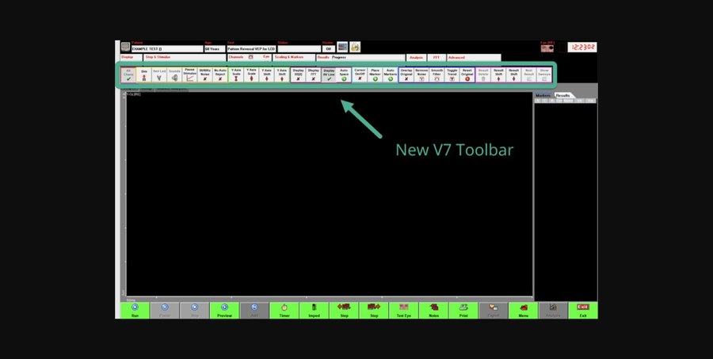
Diagnosys Espion V7
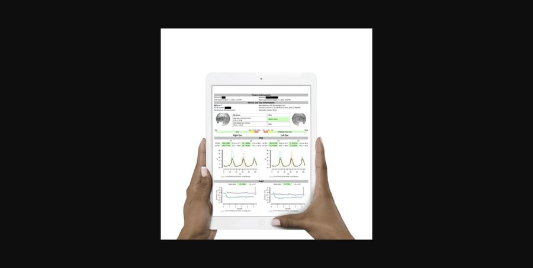
LKC RETeval
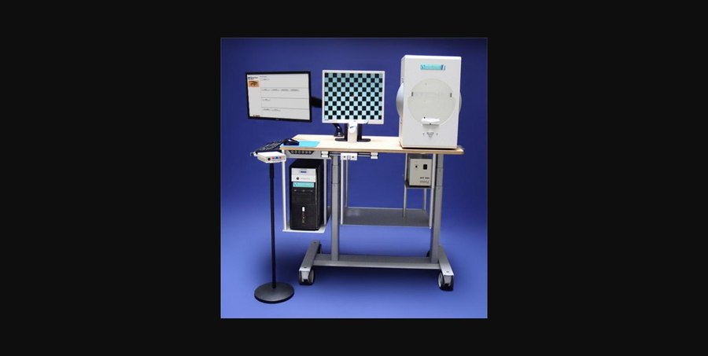
Roland Consult RETI-port/scan 21
Формального интервью с врачами не было. Источником для понимания пользователей стали сами тексты ВКР: в них уже описана процедура исследования и то, как реально должен работать врач с результатами.
Пациент не работает с приложением напрямую — он присутствует в нём как контекст: данные и история визитов. Процедура ЭРГ занимает 20–30 минут адаптации к темноте плюс электроды на роговице, сосцевидном отростке и лбу, отдельно для каждого глаза. Долгая процедура — аргумент в пользу того, чтобы результат хранился в системе и был доступен для пересмотра позже: бумажный отчёт для этого неудобен.
Основной пользователь. Авторизация по логину и паролю открывает список пациентов именно этого врача. Дальше врач ищет пациента, смотрит историю визитов или запускает анализ новых данных.
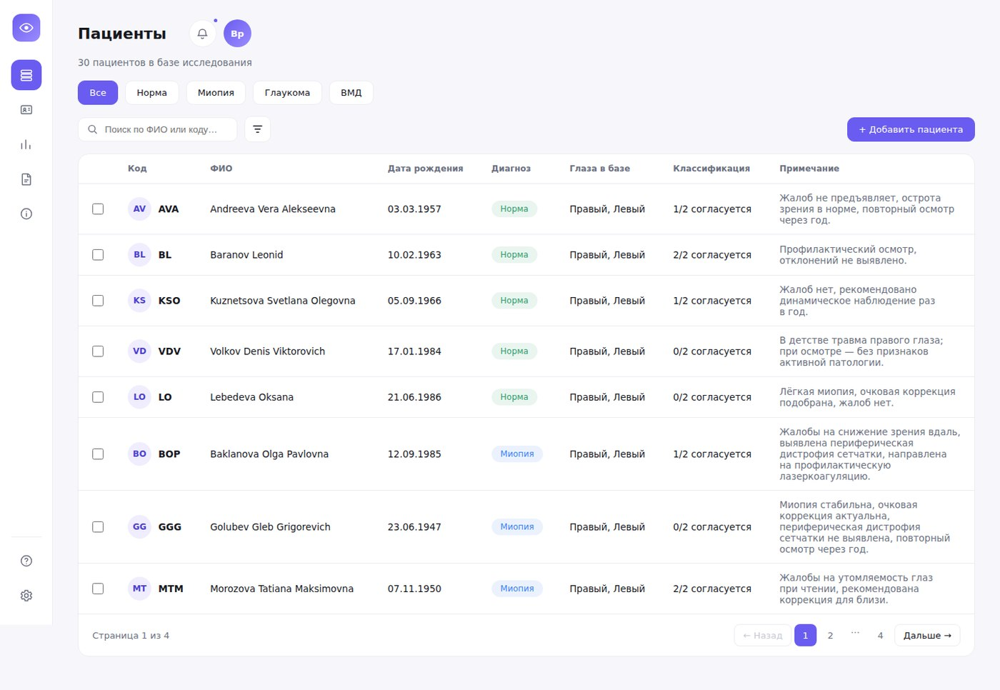
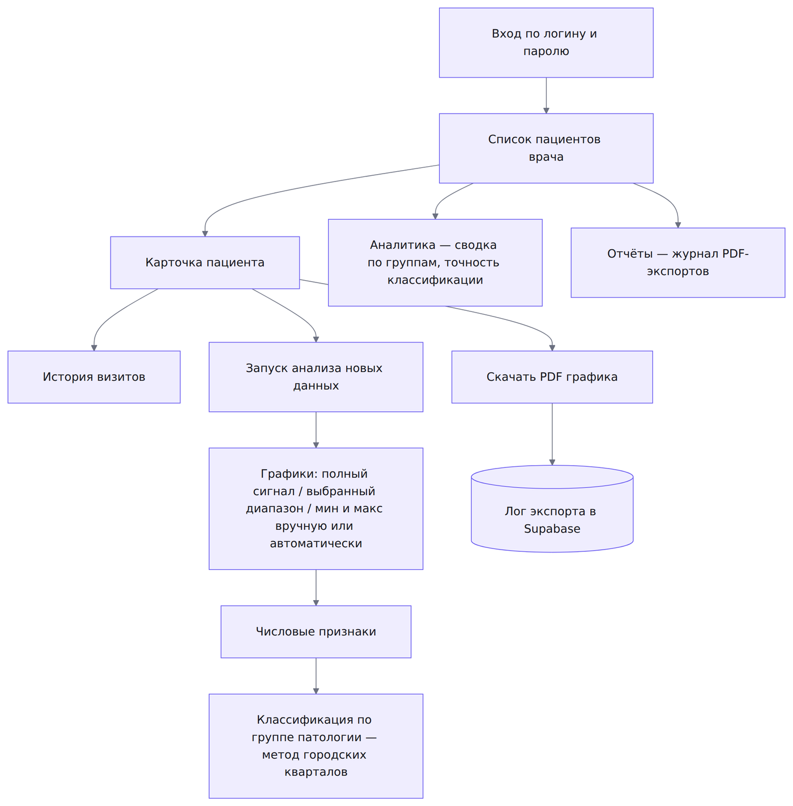
Классификация в приложении показана как поддержка решения врача. В самой ВКР написано, что у разных патологий области значений признаков заметно пересекаются, и это осложняет диагностику — формулировка в интерфейсе учитывает именно это.
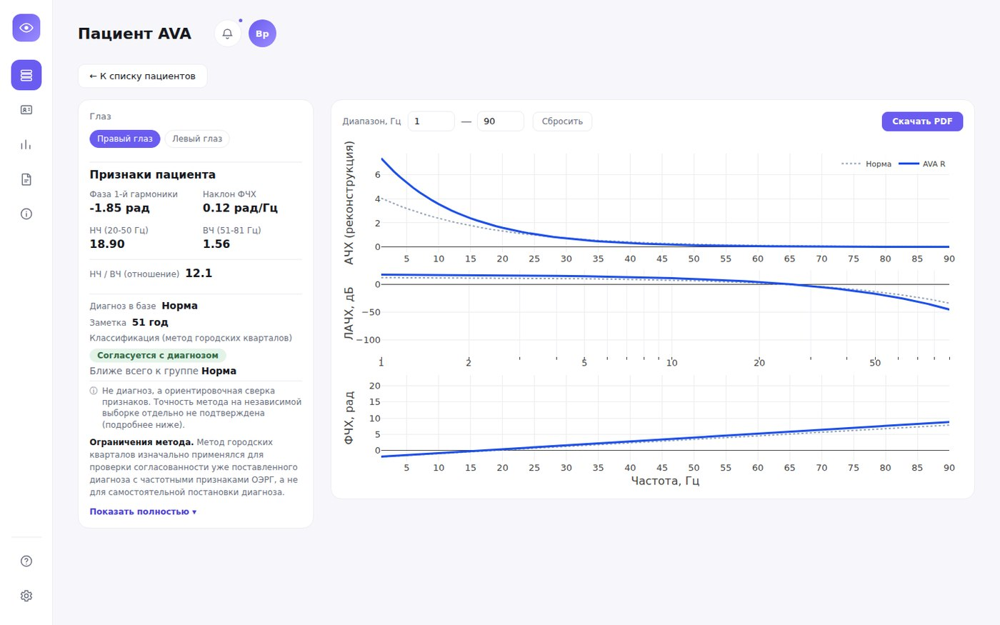
Отдельной вайрфрейм-стадии не было: экраны собирались сразу в коде, итеративно. Демонстрация работы в Figma — кликабельный прототип и структура компонентов, собранные постфактум (см. блок «Дизайн-система» ниже).
Полноценного теста с живыми врачами не было. Подготовка сделана: написан скрипт теста из 6 задач с критериями успеха, и отдельно проведён AI-прогон по этому скрипту через автоматизацию браузера — когнитивный walkthrough своими руками, без живых людей, способ найти структурные проблемы интерфейса до того, как за них сядет реальный врач.
На задаче 6 прогон нашёл реальную проблему: в панели уведомлений, если пуста только категория «недавно добавленные», а «расхождение с диагнозом» — нет, весь блок «недавно добавленные» не рендерится, без намёка, что такая категория вообще существует. Заметно это было только по коду, не по интерфейсу. Остальные 5 задач прогон прошёл без замечаний.
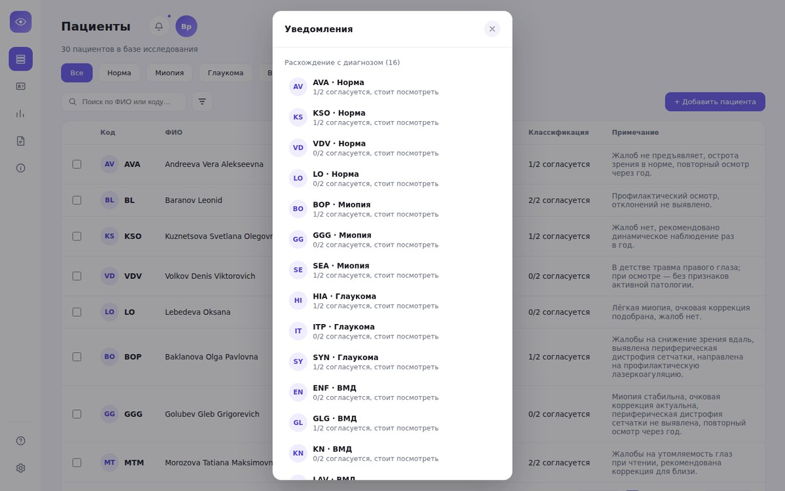
Отдельной research-стадии с интервью и гипотезами в классическом смысле здесь не было. Проект вырос прямо из готовой эмпирики ВКР. Но по ходу разработки было несколько настоящих итераций, с конкретной проблемой и конкретным решением. Вот все они.
Было: поиск по фамилии и полному возрасту. Проблема: неудобно. Стало: выпадающий список с фильтрацией по мере набора фамилии. Решение задокументировано в самой ВКР, я перенесла его как есть.
Было: одна точечная диаграмма на 2 признака из 5, 4 группы патологий наложены на одном поле и сильно перекрываются. Проблема: с четырьмя категориальными сериями точечный график на пределе читаемости, а остальные 3 признака вообще не показаны. Стало: пять маленьких панелей (по одной на признак; точки обозначают реальные визиты с детерминированным джиттером, ромб обозначает среднее) плюс отдельный график именно для пары признаков с реальной корреляцией. Подробнее в разделе «Датавиз: графики на «Аналитике»» ниже.
Было: drag-zoom на Plotly-графиках, но своя кнопка тулбара скрыта везде в приложении ради единого минималистичного набора кнопок. Значит, штатного «Reset axes» тоже нет, и увеличенный график нельзя вернуть к исходному виду. Стало: своя кнопка «Сбросить» на каждом графике, где возможен зум.
Было: 4 группы патологий различались только цветом точек. Проблема: два похожих оттенка (зелёный/оранжевый) читаются одинаково при дальтонизме. Стало: своя форма маркера на каждую группу: круг, квадрат, треугольник, крест. Эта форма не зависит от цвета.
Было: самодельный центрированный текст, если Supabase не подключён. Стало: тот же переиспользуемый компонент EmptyState, что и на «Отчётах» при пустом журнале. Один компонент вместо двух похожих, но по-разному свёрстанных вручную.
Было: у 21 из 60 визитов сохранённое значение НЧ/ВЧ расходилось с результатом НЧ ÷ ВЧ по отдельным значениям: где-то на 0.05, где-то заметно больше (до 0.5). Стало: пересчитала все 21 как НЧ ÷ ВЧ, тем же способом, каким это уже считается для новых визитов при добавлении. Точность классификации на «Аналитике» пересчиталась с 63% на 62%.
Отдельного визуального редизайна в этом кейсе нет: система показана такой, какая она есть. Шрифт держится на двух начертаниях на весь интерфейс (обычное для текста, более плотное для заголовков), с парой объяснённых размером исключений на самых мелких элементах. Цвет устроен так же системно: один набор ролей (фон, текст, акцент, рамка, предупреждение/подтверждение) переиспользуется везде, ни один экран не придумывает свой оттенок под задачу. Карточка данных — один и тот же переиспользуемый компонент на десяти разных страницах.
На графике ЭРГ кривая пациента и кривая нормы различаются цветом и типом линии, это было сразу. На точечной диаграмме «Аналитики» четыре группы патологий сначала различались только цветом, потом добавлена отдельная форма маркера на каждую группу (см. итерацию 4 выше).
На каждой панели своя локальная легенда: АЧХ, ЛАЧХ и ФЧХ показывают разные величины на разных осях, общая легенда заставляла бы взгляд каждый раз уходить в другой конец экрана. Драг-зум на графике синхронизирован с числовыми полями диапазона под ним — два входа в один и тот же диапазон. Ось ЛАЧХ логарифмическая по декадам: так этот параметр строится в самой методике, без логарифмической шкалы график терял бы форму частотной характеристики.
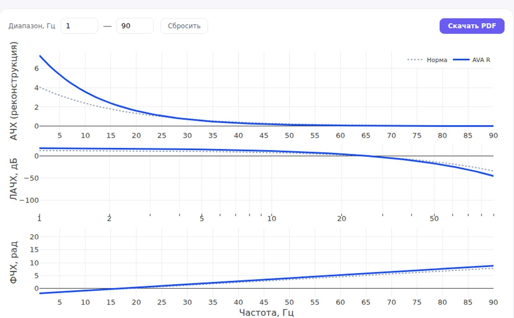
Первый график — пять маленьких панелей (2×3, та же сетка, что у диаграммы средних выше на странице), по одной на признак. Внутри каждой панели у группы патологии своя колонка по X, поэтому точки соседствуют, не накладываясь друг на друга. Реальные визиты разнесены детерминированным псевдослучайным сдвигом (одна и та же точка при пересборке страницы всегда на одном месте), поверх нанесён ромб со средним по группе.
Второй график — отдельная диаграмма для пары «фаза 1-й гармоники × наклон ФЧХ»: единственная пара, где обе величины растут в одном порядке патологий. Корреляция подписана коэффициентом Пирсона (0.88), чтобы утверждение можно было проверить.
У обоих графиков есть своя кнопка «Сбросить» (см. итерацию 3 в разделе «Процесс» выше).
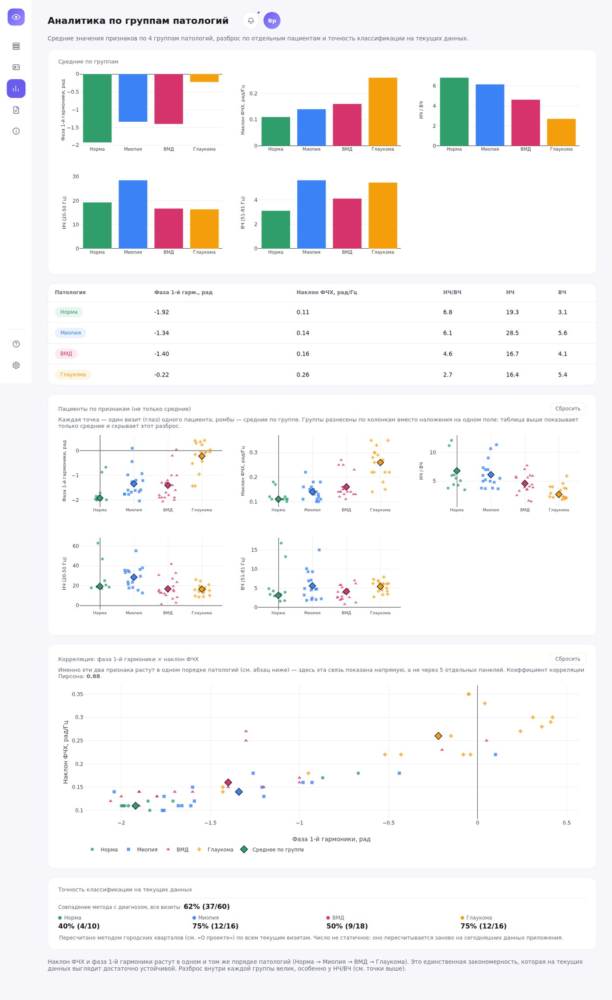
Сквозной принцип проекта: если данных для чего-то не хватает или метод даёт неидеальный результат, это показано в интерфейсе прямо. Три примера:
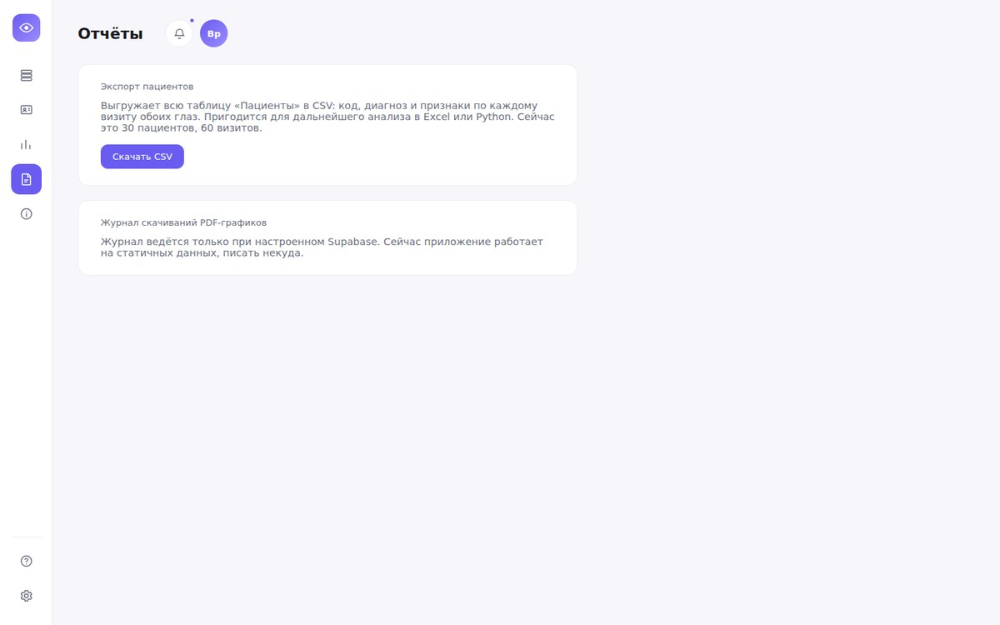
Ядро приложения, графики частотных характеристик, не из готовой библиотеки. Оно перенесено из расчётного метода, использованного в самой магистерской ВКР: реальный сигнал сравнивается с эталонным, по разнице строятся частотные характеристики. Перенос не был точной копией. В историческом расчёте было несколько «заплаток», завязанных на один конкретный исторический файл (пара мест, где значения вручную обнулялись из-за помехи в этом файле). Они не имеют смысла для любого другого сигнала, поэтому в приложении их нет.
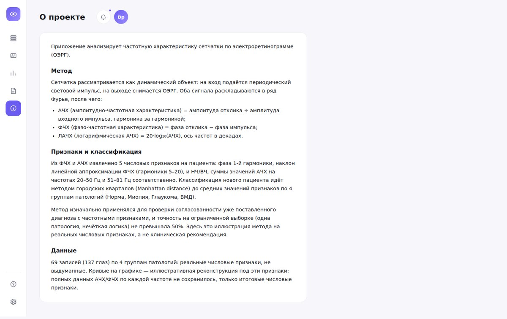
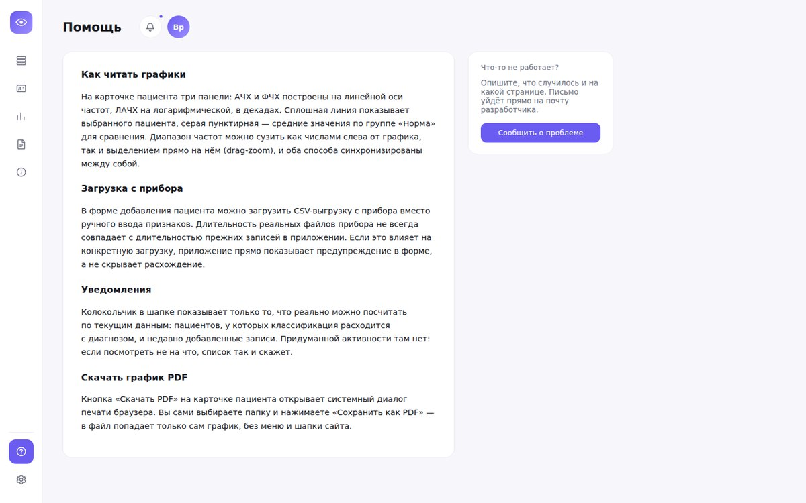
Без входа в систему нельзя ни посмотреть, ни изменить ни одной записи. Анонимные запросы к базе запрещены на уровне самой базы данных. Сейчас это простой барьер «без входа доступа нет вообще» — проект однопользовательский, разграничения по врачам пока нет, но план на него уже заложен в схеме на случай, если проект станет многопользовательским.
У девяти пациентов группы «Миопия» в исходных материалах ВКР есть настоящие имена и даты рождения. Они физически не попадают ни в публичный код, ни в собранную версию приложения (проверено полной сборкой с файлом на месте и без него). Публичная демо-версия использует только полностью придуманные имена и даты для всех 30 пациентов.
Профиль врача в настройках сделан нередактируемым осознанно: имя и специализацию задаёт администратор клиники при создании аккаунта, а к врачу относится только смена пароля (с проверкой старого: это важно для общего компьютера в кабинете). Экспорт в PDF работает без единой сторонней библиотеки, через системный диалог печати браузера с настройкой, скрывающей всё, кроме графика. Точность классификации на «Аналитике» пересчитывается заново при каждой загрузке страницы.
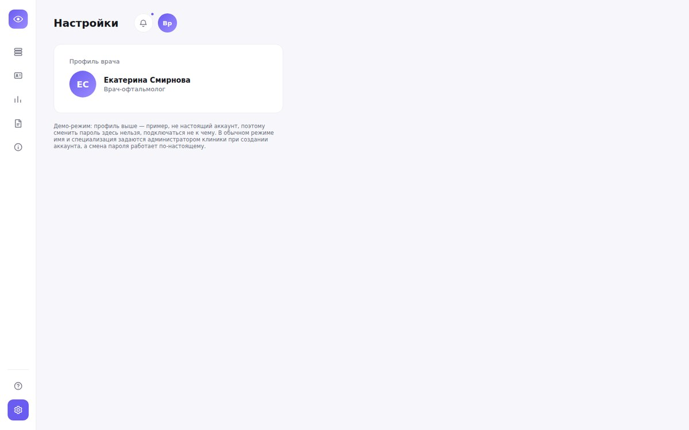
Прототип в Figma — ссылка появится позже, когда будет собран кликабельный прототип.
| Роль | Цвет | Форма маркера |
|---|---|---|
| Норма | #2f9e6b | ● круг |
| Миопия | #3b82f6 | ■ квадрат |
| ВМД | #d6336c | ▲ треугольник |
| Глаукома | #f59e0b | ✕ крест |
| Кривая пациента | #1d4fe8 | сплошная линия |
| Кривая нормы | #94a3b8 | пунктирная линия |
Шрифт — Inter, семь ступеней, начертания 400/600, плюс вариант 700 на самом мелком элементе.
| Стиль | Размер / начертание | Пример |
|---|---|---|
| Заголовок страницы | 28px / 600 | Пациенты |
| Заголовок раздела | 22px / 600 | Средние по группам |
| Заголовок карточки/модалки | 16px / 600 | Признаки пациента |
| Подзаголовок | 14px / 600 | Диапазон, Гц |
| Основной текст | 13px / 400 | Ближе всего к группе Норма |
| Вторичный текст | 12px / 400 | Не диагноз, а сверка признаков |
| Мелкая метка | 11px / 600, вариант 11px / 700 для счётчика-бейджа | 16 |